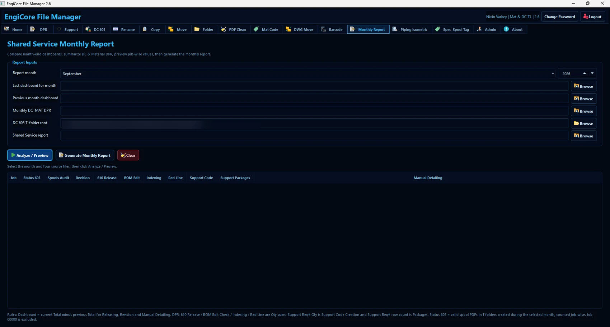
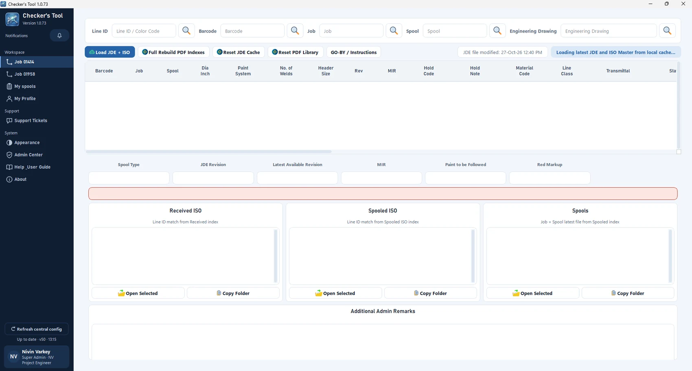
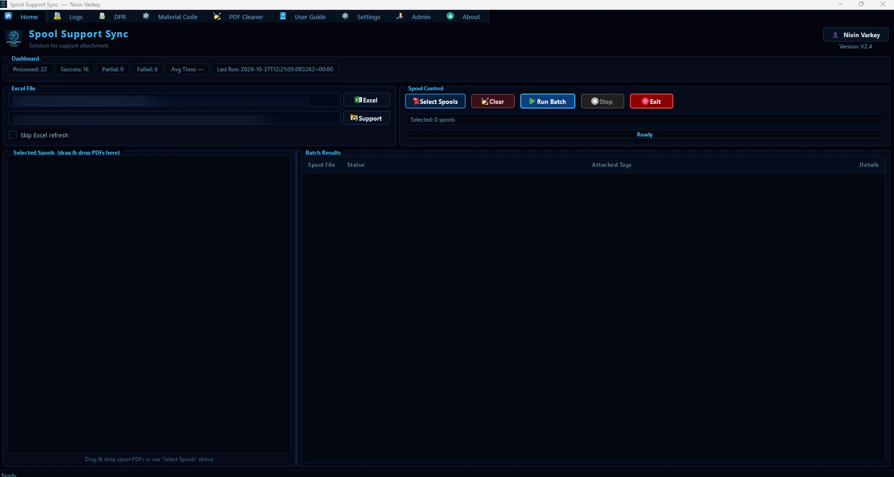
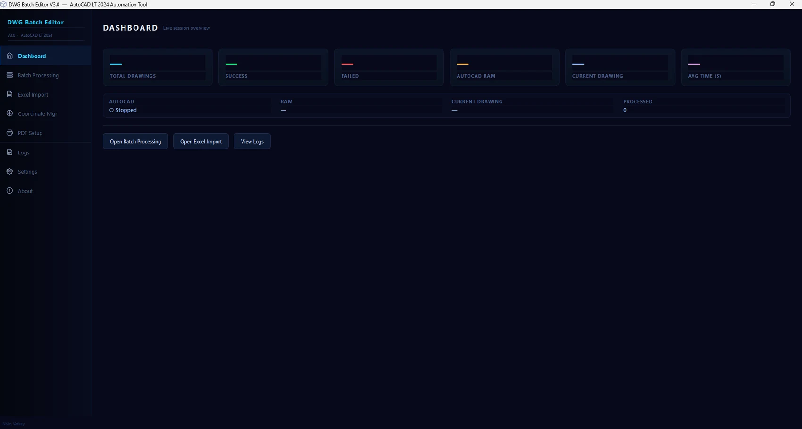
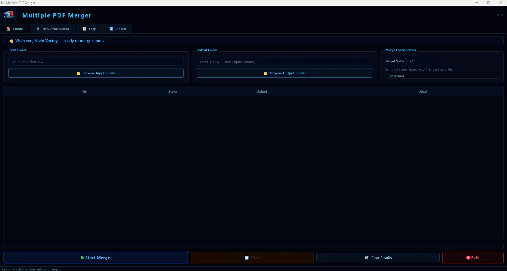

Engineering platformApplication
EngiCore
A unified workspace for the engineering tasks that cannot afford fragmented workflows.
Explore case study ↗From spool drawing coordination to CAD automation and engineering data, explore the applications and initiatives behind the workflows.

A unified workspace for the engineering tasks that cannot afford fragmented workflows.
Explore case study ↗
One checking workspace for spool drawings, JDE references and project-specific rules.
Explore case study ↗
Match the right spool with the right support information without repetitive PDF work.
Explore case study ↗
Structured drawing updates, executed across batches rather than one file at a time.
Explore case study ↗
Turn scattered spool PDFs and suffix drawings into ordered, traceable packages.
Explore case study ↗A structured daily progress workflow for assignments, checks and release reporting.
Explore case study ↗Generate coordinated ship-loose drawings and BOM workbooks from one structured input.
Explore case study ↗A visual tool concept for creating fabrication-oriented spool drawings from engineering inputs.
Explore case study ↗Targeted utilities for BOMs, joint data, job cards, SharePoint and reporting.
Explore case study ↗